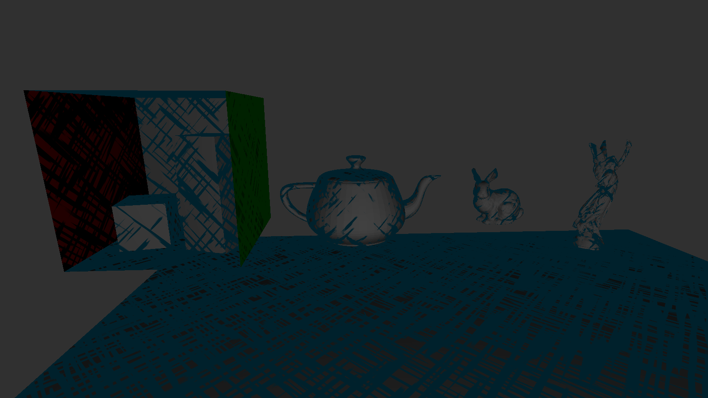

Most 3D rendering programs and pipelines are made with the ideaof “photorealisim”. But now there is a demand for stylized rendering.
Our goal now is to create a program that can allow our users to emulate cross-hatching in 3D environments. An artistic technique long used by traditional and digital artists alike.

Team Members
The project is being developed by undergraduate students in De La Salle University, as part of their thesis. The team members are as follows:
Jonathan L. De Vera
Adriel Joseph Y. Donato
Marion Jose S. Manipol
Kenwin Hans D. Reyes
Under the advisory of Neil Patrick Del Gallego, Ph.D.
Trailer
Features
Cross Hatch Rendering: Utilizes a custom shader to render 3D models with a cross-hatch style.
Model Import/Export: Supports importing and exporting 3D models in various formats.
Scene Creation: Allows users to create and manage 3D scenes with multiple objects.
Texture Management: Allows users to apply and manage textures on 3D models.
Lighting Control: Provides tools to adjust lighting conditions in the 3D environment.
User Interface: Features an intuitive UI for easy navigation and manipulation of 3D objects.
Real-time Editing: Enables real-time editing of 3D models and environments.
Crosshatch Shader: Implements a custom shader that applies a cross-hatch effect to 3D models, enhancing the visual style.
Crosshatch Parameters: Offers a range of parameters to customize the crosshatch effect, including line thickness, angle, and density.
Scene Management: Allows users to create, save, and load scenes with multiple 3D objects.
Real-time Preview: Provides a real-time preview of the cross-hatch rendering as changes are made.
Image Export: Allows users to export rendered images of the 3D scenes with cross-hatch effects.